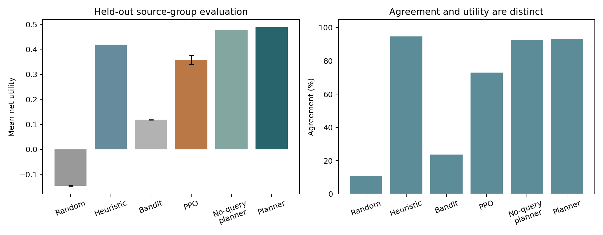
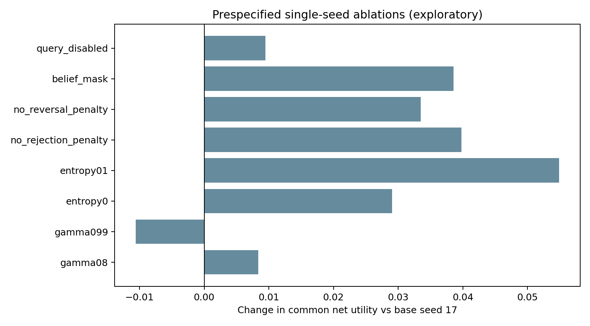
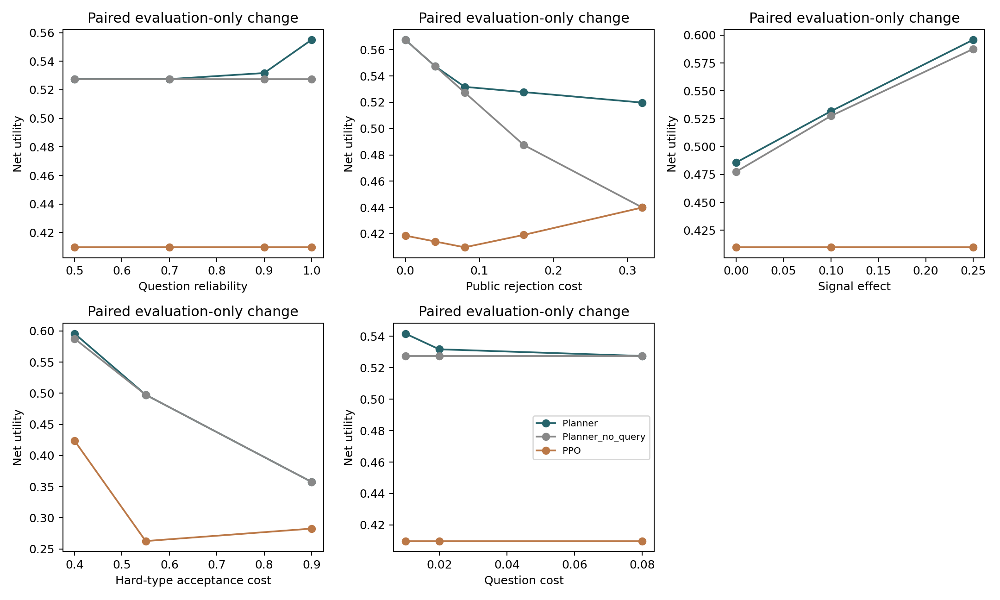
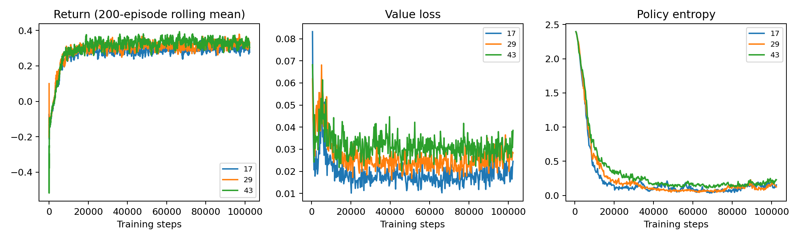
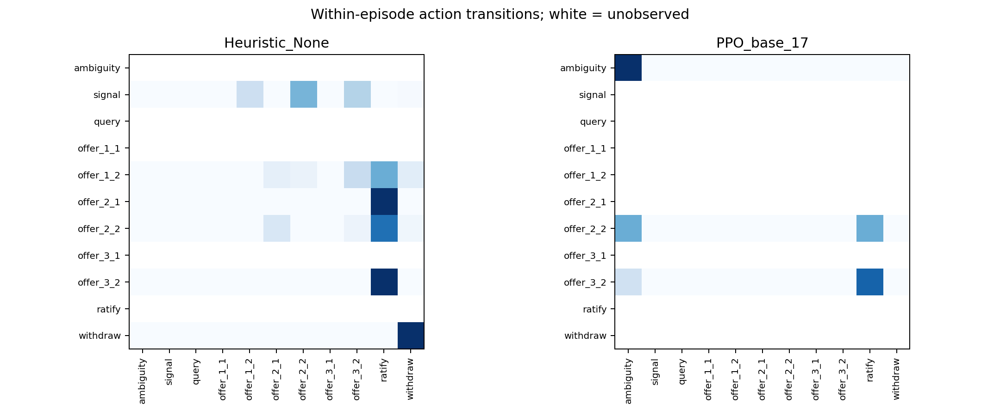

This report records the initial experiment stage. The synthetic diplomatic negotiation environment is grounded in 12 real documents from six event groups: six training, two development, and four test documents. The test split contains only two historical event groups. Its 256 numerical cases are not independent historical negotiations.
The experiment completed 14 training runs and 1,433,600 environment interactions. Across three seeds, PPO achieves mean net utility 0.3581 (SD 0.0181) and agreement 73.0%. It underperforms the strong heuristic, and base PPO uses neither queries nor signals. For the planner with access to public rules and the utterance bank, allowing queries improves utility by 0.01116. The planner is a benchmark with known model dynamics, not an equal-resource comparison of learning efficiency.
On the matched 64 conditions and style, direct Luna achieves net utility -0.3677, compared with 0.3782 for the three-seed PPO mean. In probability-weighted direct Luna trajectories, 60.7% repeat the immediately preceding rejected offer. Results use one prompt and one cached response per state; they do not characterize general Luna capabilities or performance under alternative prompts.
Error bars represent standard deviations across training seeds or Random evaluation RNG seeds, not confidence intervals over historical events. Auxiliary ablations use seed 17 and should be compared with its corresponding base policy. Sensitivity tests change one public rule at evaluation time after training. Results concern fixed synthetic utilities and source-grounded hypothetical scenarios; real diplomatic outcomes were not validated.

| policy | runs | net_utility | agreement | cost | queries | length |
|---|---|---|---|---|---|---|
| Heuristic | 1 | 0.4190 | 0.9477 | 0.1125 | 0.0000 | 3.1479 |
| Planner | 1 | 0.4882 | 0.9331 | 0.0822 | 0.2500 | 3.0299 |
| Planner_no_query | 1 | 0.4770 | 0.9276 | 0.0805 | 0.0000 | 2.8599 |
| Random | 3 | -0.1457 | 0.1101 | 0.2924 | 0.3865 | 4.2879 |
| Bandit | 3 | 0.1183 | 0.2379 | 0.0217 | 0.0446 | 1.7727 |
| PPO_base | 3 | 0.3581 | 0.7295 | 0.0546 | 0.0000 | 2.4588 |
| PPO_eval_belief_mask | 3 | 0.3550 | 0.7295 | 0.0577 | 0.0000 | 2.4827 |
| PPO_gamma08 | 1 | 0.3456 | 0.7664 | 0.0507 | 0.0000 | 2.2570 |
| PPO_gamma099 | 1 | 0.3267 | 0.7599 | 0.0517 | 0.0000 | 2.7203 |
| PPO_entropy0 | 1 | 0.3663 | 0.7398 | 0.0560 | 0.0000 | 2.7805 |
| PPO_entropy01 | 1 | 0.3921 | 0.7695 | 0.0583 | 0.0781 | 2.3668 |
| PPO_no_rejection_penalty | 1 | 0.3770 | 0.7781 | 0.0796 | 0.0000 | 2.9062 |
| PPO_no_reversal_penalty | 1 | 0.3707 | 0.7193 | 0.0543 | 0.0000 | 2.2799 |
| PPO_belief_mask | 1 | 0.3758 | 0.7685 | 0.0599 | 0.0000 | 2.7922 |
| PPO_query_disabled | 1 | 0.3467 | 0.7667 | 0.0475 | 0.0000 | 2.2495 |
| policy | seed | net_utility | agreement | queries | length | cost | acceptance_violations |
|---|---|---|---|---|---|---|---|
| Bandit | 17.0 | 0.1100 | 0.0000 | 0.0000 | 1.0000 | 0.0100 | 0.0 |
| Bandit | 29.0 | 0.1100 | 0.0000 | 0.0000 | 1.0000 | 0.0100 | 0.0 |
| Bandit | 43.0 | 0.1100 | 0.0000 | 0.0000 | 1.0000 | 0.0100 | 0.0 |
| Direct_Luna | NaN | -0.3677 | 0.2427 | 0.2164 | 3.9486 | 0.5387 | 0.0 |
| Heuristic | NaN | 0.4697 | 1.0000 | 0.0000 | 3.0562 | 0.0960 | 0.0 |
| PPO_base | 17.0 | 0.3646 | 0.8562 | 0.0000 | 2.4312 | 0.0465 | 0.0 |
| PPO_base | 29.0 | 0.3850 | 0.8000 | 0.0000 | 2.0000 | 0.0453 | 0.0 |
| PPO_base | 43.0 | 0.3850 | 0.8000 | 0.0000 | 2.0000 | 0.0453 | 0.0 |
| Planner | NaN | 0.5334 | 1.0000 | 0.4375 | 3.3275 | 0.1000 | 0.0 |
| Planner_no_query | NaN | 0.5166 | 1.0000 | 0.0000 | 2.9750 | 0.0925 | 0.0 |
Direct Luna receives the public rules in its prompt. PPO is a separate action selector trained with the same states and rewards. The experiment does not fine-tune Luna weights.



{
"bank_n": 396,
"bank_match": 379,
"probes_n": 180,
"probes_match": 180,
"note": "Same-model generation/interpretation consistency, not human gold accuracy."
}Mismatches were retained in transitions without correction or replacement by intended actions. These checks do not measure accuracy against human labels. In the condition-first style, some immediate withdrawals were interpreted as conditional withdrawals.

Case 1: signal_then_agreement | Heuristic | context sy1 | synthetic condition 0
Source: CMFA PressCon dyad 12850 (Hong Lei) (2016-03-01); candidate CSV row 3628
Source reference: doi:10.7910/DVN/BAKGET; http://web.archive.org/web/20160310051413/http://www.fmprc.gov.cn/mfa_eng/xwfw_665399/s2510_665401/2511_665403/t1344375.shtml
Real source anchor: We hope that relevant parties can truly bear in mind the future of their state and the fundamental interests of their people, strictly follow Resolution 2254 of the UN Security Council and the outcomes of the 4th foreign ministers' meeting of the International Syria Support Group, and seriously implement ceasefire and cessation of violence.
Outcome agreement; net utility 0.3700; agreement 1.0; source context is not an observed trajectory.
Turn 1: We commit resources at a cost of 0.06 utility units to a monitored confidence-building measure, to be implemented transparently and in accordance with applicable understandings.
Meaning: {'kind': 'signal', 'cost': 0.06}; response: We acknowledge your statement.
Belief 0.650 -> 0.650; reward -0.0700; costs {'turn': 0.01, 'query': 0.0, 'signal': 0.06, 'rejection': 0.0, 'escalation': 0.0, 'reversal': 0.0, 'invalid': 0.0}
Turn 2: We will maintain a cessation of hostilities for three weeks, provided that you maintain a cessation of hostilities for two weeks; our commitment is expressly contingent upon yours.
Meaning: {'kind': 'offer', 'x': 3, 'y': 2}; response: We accept the proposal subject to its stated reciprocal terms.
Belief 0.650 -> 0.650; reward -0.0100; costs {'turn': 0.01, 'query': 0.0, 'signal': 0.0, 'rejection': 0.0, 'escalation': 0.0, 'reversal': 0.0, 'invalid': 0.0}
Turn 3: We call upon you to ratify the currently accepted agreement, subject to the recorded bilateral conditions, and to implement it in full; no additional terms are proposed or implied.
Meaning: {'kind': 'ratify'}; response: We acknowledge your statement.
Belief 0.650 -> 0.650; reward 0.4500; costs {'turn': 0.01, 'query': 0.0, 'signal': 0.0, 'rejection': 0.0, 'escalation': 0.0, 'reversal': 0.0, 'invalid': 0.0}Case 2: appropriate_withdrawal | Heuristic | context sy1 | synthetic condition 25
Source: CMFA PressCon dyad 12850 (Hong Lei) (2016-03-01); candidate CSV row 3628
Source reference: doi:10.7910/DVN/BAKGET; http://web.archive.org/web/20160310051413/http://www.fmprc.gov.cn/mfa_eng/xwfw_665399/s2510_665401/2511_665403/t1344375.shtml
Real source anchor: We hope that relevant parties can truly bear in mind the future of their state and the fundamental interests of their people, strictly follow Resolution 2254 of the UN Security Council and the outcomes of the 4th foreign ministers' meeting of the International Syria Support Group, and seriously implement ceasefire and cessation of violence.
Outcome withdrawal; net utility -0.1400; agreement 0.0; source context is not an observed trajectory.
Turn 1: We commit resources at a cost of 0.06 utility units to a monitored confidence-building measure, to be implemented transparently and in accordance with applicable understandings.
Meaning: {'kind': 'signal', 'cost': 0.06}; response: We acknowledge your statement.
Belief 0.350 -> 0.350; reward -0.0700; costs {'turn': 0.01, 'query': 0.0, 'signal': 0.06, 'rejection': 0.0, 'escalation': 0.0, 'reversal': 0.0, 'invalid': 0.0}
Turn 2: We will maintain the cessation of hostilities for two weeks, provided that you likewise maintain it for two weeks; our commitment is expressly contingent upon yours.
Meaning: {'kind': 'offer', 'x': 2, 'y': 2}; response: We do not accept those reciprocal terms.
Belief 0.350 -> 1.000; reward -0.1750; costs {'turn': 0.01, 'query': 0.0, 'signal': 0.0, 'rejection': 0.16, 'escalation': 0.005, 'reversal': 0.0, 'invalid': 0.0}
Turn 3: We hereby withdraw from these negotiations, without proposing or ratifying any agreement, while urging all relevant parties to uphold Resolution 2254, honor the cessation of violence, and safeguard their people’s fundamental interests.
Meaning: {'kind': 'withdraw'}; response: We acknowledge your statement.
Belief 1.000 -> 1.000; reward 0.1050; costs {'turn': 0.01, 'query': 0.0, 'signal': 0.0, 'rejection': 0.0, 'escalation': 0.005, 'reversal': 0.0, 'invalid': 0.0}Case 3: opportunity_exhaustion | Heuristic | context sy1 | synthetic condition 25
Source: CMFA PressCon dyad 12850 (Hong Lei) (2016-03-01); candidate CSV row 3628
Source reference: doi:10.7910/DVN/BAKGET; http://web.archive.org/web/20160310051413/http://www.fmprc.gov.cn/mfa_eng/xwfw_665399/s2510_665401/2511_665403/t1344375.shtml
Real source anchor: We hope that relevant parties can truly bear in mind the future of their state and the fundamental interests of their people, strictly follow Resolution 2254 of the UN Security Council and the outcomes of the 4th foreign ministers' meeting of the International Syria Support Group, and seriously implement ceasefire and cessation of violence.
Outcome exhausted; net utility -0.4700; agreement 0.0; source context is not an observed trajectory.
Turn 1: Provided that the relevant parties uphold the agreed framework and implement the ceasefire under monitoring, we now commit resources costing 0.06 utility units to a monitored confidence-building measure.
Meaning: {'kind': 'signal', 'cost': 0.06}; response: We acknowledge your statement.
Belief 0.350 -> 0.350; reward -0.0700; costs {'turn': 0.01, 'query': 0.0, 'signal': 0.06, 'rejection': 0.0, 'escalation': 0.0, 'reversal': 0.0, 'invalid': 0.0}
Turn 2: If you maintain the cessation of hostilities for two weeks, we will likewise maintain it for two weeks; our commitment depends on yours.
Meaning: {'kind': 'offer', 'x': 2, 'y': 2}; response: We do not accept those reciprocal terms.
Belief 0.350 -> 1.000; reward -0.1750; costs {'turn': 0.01, 'query': 0.0, 'signal': 0.0, 'rejection': 0.16, 'escalation': 0.005, 'reversal': 0.0, 'invalid': 0.0}
Turn 3: If these negotiations cannot advance without compromising our principles, we will withdraw without proposing or ratifying any agreement.
Meaning: {'kind': 'invalid'}; response: We acknowledge your statement.
Belief 1.000 -> 1.000; reward -0.1150; costs {'turn': 0.01, 'query': 0.0, 'signal': 0.0, 'rejection': 0.0, 'escalation': 0.005, 'reversal': 0.0, 'invalid': 0.1}
Turn 4: If these negotiations cannot advance without compromising our principles, we will withdraw without proposing or ratifying any agreement.
Meaning: {'kind': 'invalid'}; response: We acknowledge your statement.
Belief 1.000 -> 1.000; reward -0.1150; costs {'turn': 0.01, 'query': 0.0, 'signal': 0.0, 'rejection': 0.0, 'escalation': 0.005, 'reversal': 0.0, 'invalid': 0.1}
Turn 5: If these negotiations cannot advance without compromising our principles, we will withdraw without proposing or ratifying any agreement.
Meaning: {'kind': 'invalid'}; response: We acknowledge your statement.
Belief 1.000 -> 1.000; reward 0.0050; costs {'turn': 0.01, 'query': 0.0, 'signal': 0.0, 'rejection': 0.0, 'escalation': 0.005, 'reversal': 0.0, 'invalid': 0.1}Case 4: other_breakdown | Heuristic | context sy1 | synthetic condition 29
Source: CMFA PressCon dyad 12850 (Hong Lei) (2016-03-01); candidate CSV row 3628
Source reference: doi:10.7910/DVN/BAKGET; http://web.archive.org/web/20160310051413/http://www.fmprc.gov.cn/mfa_eng/xwfw_665399/s2510_665401/2511_665403/t1344375.shtml
Real source anchor: We hope that relevant parties can truly bear in mind the future of their state and the fundamental interests of their people, strictly follow Resolution 2254 of the UN Security Council and the outcomes of the 4th foreign ministers' meeting of the International Syria Support Group, and seriously implement ceasefire and cessation of violence.
Outcome withdrawal; net utility 0.0400; agreement 0.0; source context is not an observed trajectory.
Turn 1: We commit resources at a cost of 0.06 utility units to a monitored confidence-building measure, to be implemented transparently and in accordance with applicable understandings.
Meaning: {'kind': 'signal', 'cost': 0.06}; response: We acknowledge your statement.
Belief 0.650 -> 0.650; reward -0.0700; costs {'turn': 0.01, 'query': 0.0, 'signal': 0.06, 'rejection': 0.0, 'escalation': 0.0, 'reversal': 0.0, 'invalid': 0.0}
Turn 2: We hereby withdraw from these negotiations, without proposing or ratifying any agreement, while urging all relevant parties to uphold Resolution 2254, honor the cessation of violence, and safeguard their people’s fundamental interests.
Meaning: {'kind': 'withdraw'}; response: We acknowledge your statement.
Belief 0.650 -> 0.650; reward 0.1100; costs {'turn': 0.01, 'query': 0.0, 'signal': 0.0, 'rejection': 0.0, 'escalation': 0.0, 'reversal': 0.0, 'invalid': 0.0}Case 5: question_then_agreement | Planner | context sy1 | synthetic condition 0
Source: CMFA PressCon dyad 12850 (Hong Lei) (2016-03-01); candidate CSV row 3628
Source reference: doi:10.7910/DVN/BAKGET; http://web.archive.org/web/20160310051413/http://www.fmprc.gov.cn/mfa_eng/xwfw_665399/s2510_665401/2511_665403/t1344375.shtml
Real source anchor: We hope that relevant parties can truly bear in mind the future of their state and the fundamental interests of their people, strictly follow Resolution 2254 of the UN Security Council and the outcomes of the 4th foreign ministers' meeting of the International Syria Support Group, and seriously implement ceasefire and cessation of violence.
Outcome agreement; net utility 0.7000; agreement 1.0; source context is not an observed trajectory.
Turn 1: We respectfully inquire, through private channels, whether you would require a larger reciprocal concession to accept the proposed understanding. This inquiry constitutes neither an offer nor a public commitment; we remain guided by the relevant Security Council resolution and the need to advance a durable cessation of violence.
Meaning: {'kind': 'query'}; response: Privately, a more limited reciprocal concession may meet our acceptance conditions.
Belief 0.650 -> 0.000; reward -0.0300; costs {'turn': 0.01, 'query': 0.02, 'signal': 0.0, 'rejection': 0.0, 'escalation': 0.0, 'reversal': 0.0, 'invalid': 0.0}
Turn 2: We commit resources at a cost of 0.06 utility units to a monitored confidence-building measure, to be implemented transparently and in accordance with applicable understandings.
Meaning: {'kind': 'signal', 'cost': 0.06}; response: We acknowledge your statement.
Belief 0.000 -> 0.000; reward -0.0700; costs {'turn': 0.01, 'query': 0.0, 'signal': 0.06, 'rejection': 0.0, 'escalation': 0.0, 'reversal': 0.0, 'invalid': 0.0}
Turn 3: We will maintain a cessation of hostilities for one week, provided that you maintain a cessation of hostilities for two weeks; our commitment is expressly contingent upon yours.
Meaning: {'kind': 'offer', 'x': 1, 'y': 2}; response: We accept the proposal subject to its stated reciprocal terms.
Belief 0.000 -> 0.000; reward -0.0100; costs {'turn': 0.01, 'query': 0.0, 'signal': 0.0, 'rejection': 0.0, 'escalation': 0.0, 'reversal': 0.0, 'invalid': 0.0}
Turn 4: We call upon you to ratify the currently accepted agreement, subject to the recorded bilateral conditions, and to implement it in full; no additional terms are proposed or implied.
Meaning: {'kind': 'ratify'}; response: We acknowledge your statement.
Belief 0.000 -> 0.000; reward 0.8100; costs {'turn': 0.01, 'query': 0.0, 'signal': 0.0, 'rejection': 0.0, 'escalation': 0.0, 'reversal': 0.0, 'invalid': 0.0}Case 6: direct_agreement | Planner | context sy1 | synthetic condition 1
Source: CMFA PressCon dyad 12850 (Hong Lei) (2016-03-01); candidate CSV row 3628
Source reference: doi:10.7910/DVN/BAKGET; http://web.archive.org/web/20160310051413/http://www.fmprc.gov.cn/mfa_eng/xwfw_665399/s2510_665401/2511_665403/t1344375.shtml
Real source anchor: We hope that relevant parties can truly bear in mind the future of their state and the fundamental interests of their people, strictly follow Resolution 2254 of the UN Security Council and the outcomes of the 4th foreign ministers' meeting of the International Syria Support Group, and seriously implement ceasefire and cessation of violence.
Outcome agreement; net utility 0.6200; agreement 1.0; source context is not an observed trajectory.
Turn 1: We will maintain the cessation of hostilities for two weeks, provided that you likewise maintain it for two weeks; our commitment is expressly contingent upon yours.
Meaning: {'kind': 'offer', 'x': 2, 'y': 2}; response: We accept the proposal subject to its stated reciprocal terms.
Belief 0.350 -> 0.000; reward -0.0100; costs {'turn': 0.01, 'query': 0.0, 'signal': 0.0, 'rejection': 0.0, 'escalation': 0.0, 'reversal': 0.0, 'invalid': 0.0}
Turn 2: We call upon you to ratify the currently accepted agreement, subject to the recorded bilateral conditions, and to implement it in full; no additional terms are proposed or implied.
Meaning: {'kind': 'ratify'}; response: We acknowledge your statement.
Belief 0.000 -> 0.000; reward 0.6300; costs {'turn': 0.01, 'query': 0.0, 'signal': 0.0, 'rejection': 0.0, 'escalation': 0.0, 'reversal': 0.0, 'invalid': 0.0}Case 7: costly_agreement | Planner | context sy1 | synthetic condition 17
Source: CMFA PressCon dyad 12850 (Hong Lei) (2016-03-01); candidate CSV row 3628
Source reference: doi:10.7910/DVN/BAKGET; http://web.archive.org/web/20160310051413/http://www.fmprc.gov.cn/mfa_eng/xwfw_665399/s2510_665401/2511_665403/t1344375.shtml
Real source anchor: We hope that relevant parties can truly bear in mind the future of their state and the fundamental interests of their people, strictly follow Resolution 2254 of the UN Security Council and the outcomes of the 4th foreign ministers' meeting of the International Syria Support Group, and seriously implement ceasefire and cessation of violence.
Outcome agreement; net utility -0.2250; agreement 1.0; source context is not an observed trajectory.
Turn 1: We will maintain the cessation of hostilities for two weeks, provided that you likewise maintain it for two weeks; our commitment is expressly contingent upon yours.
Meaning: {'kind': 'offer', 'x': 2, 'y': 2}; response: We do not accept those reciprocal terms.
Belief 0.200 -> 1.000; reward -0.3350; costs {'turn': 0.01, 'query': 0.0, 'signal': 0.0, 'rejection': 0.32, 'escalation': 0.005, 'reversal': 0.0, 'invalid': 0.0}
Turn 2: We will maintain the cessation of hostilities for two weeks, provided that you maintain it for one week; our commitment is expressly contingent upon yours.
Meaning: {'kind': 'offer', 'x': 2, 'y': 1}; response: We accept the proposal subject to its stated reciprocal terms.
Belief 1.000 -> 1.000; reward -0.0150; costs {'turn': 0.01, 'query': 0.0, 'signal': 0.0, 'rejection': 0.0, 'escalation': 0.005, 'reversal': 0.0, 'invalid': 0.0}
Turn 3: We call upon you to ratify the currently accepted agreement, subject to the recorded bilateral conditions, and to implement it in full; no additional terms are proposed or implied.
Meaning: {'kind': 'ratify'}; response: We acknowledge your statement.
Belief 1.000 -> 1.000; reward 0.1250; costs {'turn': 0.01, 'query': 0.0, 'signal': 0.0, 'rejection': 0.0, 'escalation': 0.005, 'reversal': 0.0, 'invalid': 0.0}Case 8: direct_luna_repeated_rejection | Direct_Luna | context ir1 | synthetic condition 0
Source: S/2020/644 — Halimah DeShong (Saint Vincent And The Grenadines) (2020-06-30); candidate CSV row 6149
Source reference: doi:10.7910/DVN/KGVSYH; UNSC_2020_S_2020_644_spch0014.txt
Real source anchor: We take note that Iran has indicated that those steps are reversible, having undertaken them subsequent to the withdrawal of the United States from the agreement.
Outcome withdrawal; net utility -0.8000; agreement 0.0; source context is not an observed trajectory.
Turn 1: We will suspend the specified sanctions for 1 week, conditional upon your suspension of the specified nuclear activities for 2 weeks; our commitment is contingent upon yours.
Meaning: {'kind': 'offer', 'x': 1, 'y': 2}; response: We do not accept those reciprocal terms.
Belief 0.650 -> 0.650; reward -0.1750; costs {'turn': 0.01, 'query': 0.0, 'signal': 0.0, 'rejection': 0.16, 'escalation': 0.005, 'reversal': 0.0, 'invalid': 0.0}
Turn 2: We will suspend the specified sanctions for 1 week, conditional upon your suspension of the specified nuclear activities for 2 weeks; our commitment is contingent upon yours.
Meaning: {'kind': 'offer', 'x': 1, 'y': 2}; response: We do not accept those reciprocal terms.
Belief 0.650 -> 0.650; reward -0.1900; costs {'turn': 0.01, 'query': 0.0, 'signal': 0.0, 'rejection': 0.16, 'escalation': 0.02, 'reversal': 0.0, 'invalid': 0.0}
Turn 3: We will suspend the specified sanctions for 1 week, conditional upon your suspension of the specified nuclear activities for 2 weeks; our commitment is contingent upon yours.
Meaning: {'kind': 'offer', 'x': 1, 'y': 2}; response: We do not accept those reciprocal terms.
Belief 0.650 -> 0.650; reward -0.2150; costs {'turn': 0.01, 'query': 0.0, 'signal': 0.0, 'rejection': 0.16, 'escalation': 0.045, 'reversal': 0.0, 'invalid': 0.0}
Turn 4: We will suspend the specified sanctions for 1 week, conditional upon your suspension of the specified nuclear activities for 2 weeks; our commitment is contingent upon yours.
Meaning: {'kind': 'offer', 'x': 1, 'y': 2}; response: We do not accept those reciprocal terms.
Belief 0.650 -> 0.650; reward -0.2500; costs {'turn': 0.01, 'query': 0.0, 'signal': 0.0, 'rejection': 0.16, 'escalation': 0.08, 'reversal': 0.0, 'invalid': 0.0}
Turn 5: We hereby withdraw from these negotiations and will not propose or ratify any agreement arising from them.
Meaning: {'kind': 'withdraw'}; response: We acknowledge your statement.
Belief 0.650 -> 0.650; reward 0.0300; costs {'turn': 0.01, 'query': 0.0, 'signal': 0.0, 'rejection': 0.0, 'escalation': 0.08, 'reversal': 0.0, 'invalid': 0.0}At this experiment stage, cumulative additional model-response cost was $0.145626, with $0.000000 reserved for unresolved requests. Raw logs, models, run settings, and requests/responses are retained; the private cost ledger is excluded from the release. Discourse cases are retained in the saved logs and walkthroughs; the later Sol replication is available in ../sol_results/. Independent human validation is not claimed.